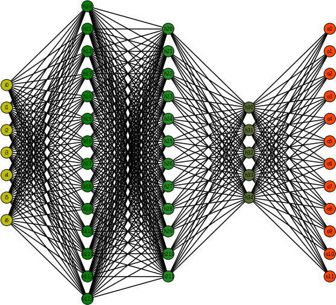
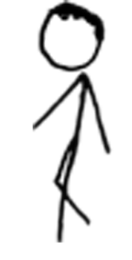
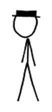
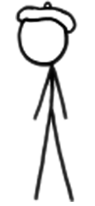

Today’s question
How do we move from describing data to making predictions, testing causes, and designing better evidence?
Descriptive Analytics
Diagnostic Analytics
Predictive Analytics
Prescriptive Analytics
Complexity and added value usually rise together.
| General equation | Regression equation | Multiple regression |
|---|---|---|
Y = mX + b |
Y-hat = b0 + b1X |
Y-hat = b0 + b1X1 + b2X2 + b3X3 + b4X4 |
Big idea
Regression translates relationships between variables into an equation we can use for explanation or prediction.
Simple linear regression fits a line through the pattern in the data.
Forecasting extends a pattern forward, with uncertainty.
The sigmoid curve turns a linear score into a probability-like value.
From human-readable
Labeled data becomes training data and test data. Feature engineering decides what the model can see.
Labeled face
to

Deep learning model
to
Prediction
Adjust. Repeat for many examples. Test on faces the model has not seen.
Model work
Application work
Models can be powerful and hard to inspect
Advanced analytics often shifts the question from “what happened?” to “how much do we trust what the system decided?”
Support Vector Machine
K Nearest Neighbors
Decision Tree
Random Forest
Naive Bayes
Neural Net
K-Means
Group similar observations.
Anomaly Detection
Find observations that do not fit the pattern.
Feature Reduction
Keep the signal. Drop the noise.
Receiver Operating Characteristic
TPR FPR AUC = 80.23%
Interpretation
A better classifier rises quickly toward high true positives while keeping false positives low.
Subjects
Treatment
=
Outcome
Control Group
No treatment or baseline condition.
Experimental Group
Receives the treatment.
Confound
A variable that changes with the treatment and could explain the outcome.
Extraneous variable
A variable that adds noise or distraction, even if it is not the main explanation.
Design problem
If a difference appears after treatment, what else changed at the same time?
Things people notice once attention is drawn to them:
Internal Validity
Can we defend that the treatment caused the observed change inside this study?
External Validity
Can the result travel to other people, places, times, and versions of the treatment?
Experimental Group
Treatment
Post-test
Risk
With no pre-test or control group, it is hard to know what would have happened otherwise.
Experimental Group
Pre-test
Treatment
Post-test
Improvement
The pre-test gives a baseline, but time and outside events can still explain the change.
Experimental Group
Treatment
Post-test
Control Group
No treatment
Post-test
Risk
The groups may have been different before the treatment began.
Random assignment keeps the party from choosing the groups.
<span>Free booze</span>
<span>Apps-n-zerts</span>
<span>DJ Mahalanobis</span>
<span>Fun people</span>
<span>Pie</span>
<span>Neat water party</span>
<span>Triscuit inspired crackers</span>
<span>Royalty free music</span>Experimental Group
Pre-test
Treatment
Post-test
Control Group
Pre-test
No treatment
Post-test
Experimental Group
Treatment
Post-test
Control Group
No treatment
Post-test
Randomization matters
If groups were randomly assigned, posttest-only designs can still support causal claims.
Treatment 1
Treatment 2
Males


Females

ANOVA names tell us:
One-way independent ANOVA
Two-way independent ANOVA
Two-way mixed ANOVA
Three-way repeated measures ANOVA
Two-way repeated measures ANCOVA
Three-way mixed MANCOVA
Total Variability
Systematic Variation
Unsystematic Variation
Variable A
Variable B
Interaction of A and B
SS Total = SS Model + SS Residual
Interaction between factors: the effect of one variable depends on the level of another.
Prime directive
Ask what evidence would make the claim defensible.
Pick one advanced analytics or experiment example from today.
Answer: